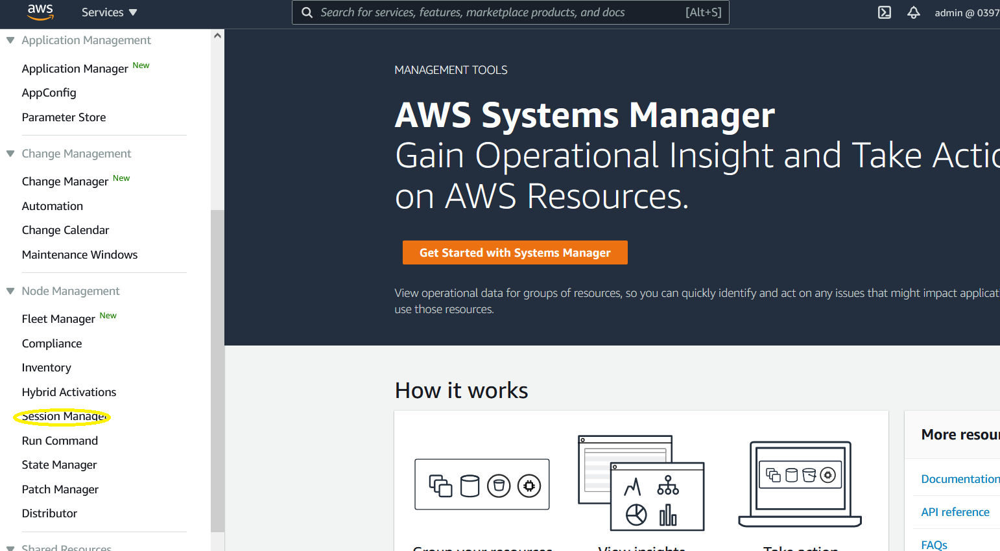
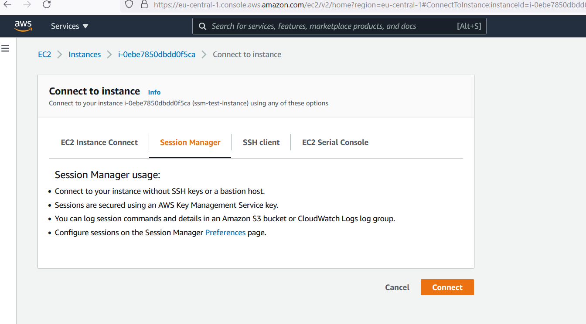
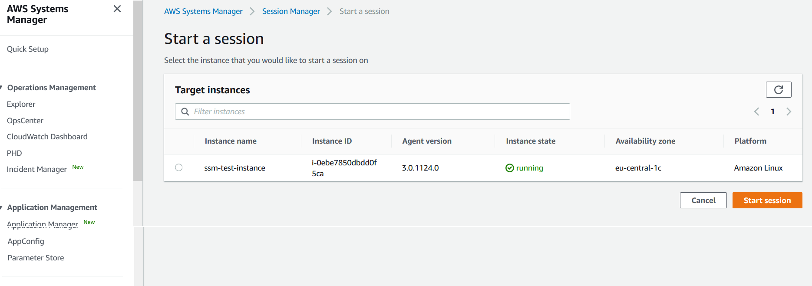
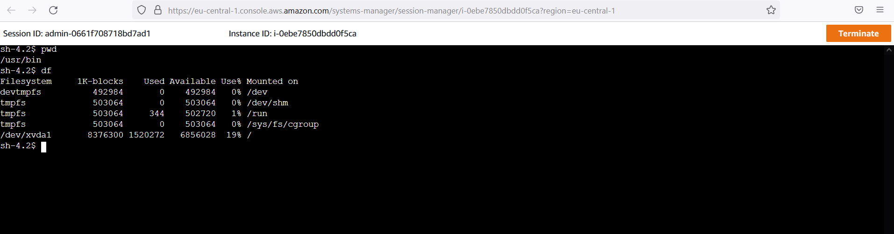

SCC
Brasil
os cloud gurus
Software Cloud Consulting
Your software development, cloud, consulting & shoring company
How to use the sessions manager
By Wolfgang Unger
If you worked with AWS and EC2 for a while, you probably connected a lot with key pairs and ssh.
For example 'ssh -i "mykeypair.pem" ec2-user@myIpAdress
With this approach you need the keypair on your local machine and you need to allow traffic from
you VPC where the instance is hosted to your local machine and
of course you need to open the SecurityGroup of your instance to allow traffic to you local
machine
If you are not connected with DirectConnect or VPN this is already a security issue. You will
have to open Port 22 for the internet or you have to adapt the public IP address
of you local machine in the SecurityGroup
The SystemsManager has by now the feature SessionManager which will simplify your life here .
And also improve the security of your system by allowing you to close Security Group Ports

To grant access to your machines ( or connecting with ssh to your machines) you use by now IAM,
not keypairs and open Ports
You can now login from anywhere where you have access to the AWS Web Console
You can also log the commands into CloudWatch
To enable the SessionsManager access, the SSM agent muss run on the EC2 machine (latest version > 2.3.12). You must also assign a role that allows access to the SSM service or you extend your existing role . As Managed Policy you need AmazonSSMManagedInstanceCore.
You can use this code snippet to create this role for your instances with CloudFormation
SSMInstanceRole:
Type: 'AWS::IAM::Role'
Properties:
RoleName: 'My-SMM-InstanceRole'
AssumeRolePolicyDocument:
Version: '2012-10-17'
Statement:
- Effect: Allow
Principal:
Service:
- ec2.amazonaws.com
Action: 'sts:AssumeRole'
Path: /
ManagedPolicyArns:
- arn:aws:iam::aws:policy/AmazonSSMManagedInstanceCore
After creating your role, you must assign this role to your EC2 instances. Or as mentioned extend
your exisiting role(s) to allow access to SSM ServiceAfter assigning the role you will be able to connect with the SessionsManager to the instance. You can connect straight ahead with the 'connect' Button of your
EC2 instance.

Or you you can also connect in the SessionsManager by selecting your EC2 instance

Once you have connected and opened a sesion you will be able able to execute bash commands the same way as you where connected via ssh client

That's it, it is quite easy. Please have also a look in the preferences of the SessionsManager. You can setup looging ( to CloudWatch or S3)and Shell Profiles (Linux and Windows)
Autor

Wolfgang Unger
AWS Architect & Developer
6 x AWS Certified
1 x Azure Certified
A Cloud Guru Instructor
Certified Oracle JEE Architect
Certified Scrum Master
Certified Java Programmer
Passionate surfer & guitar player